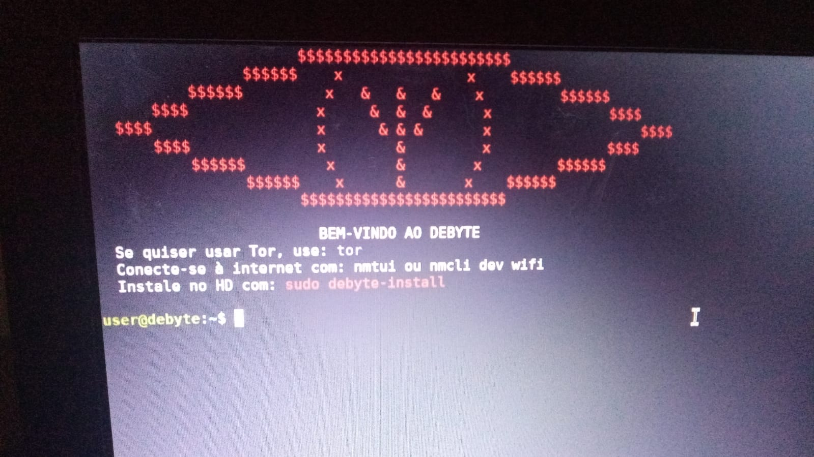
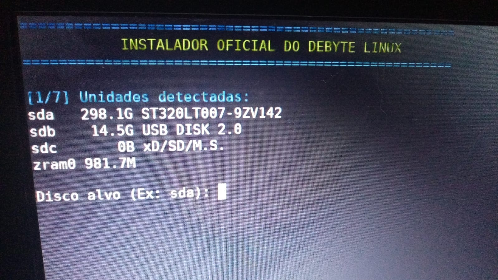
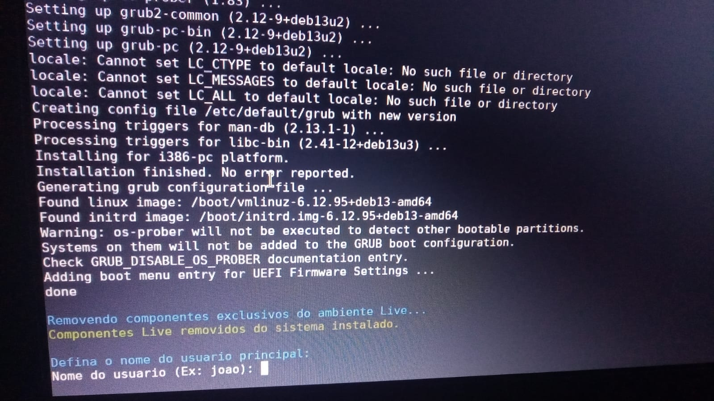
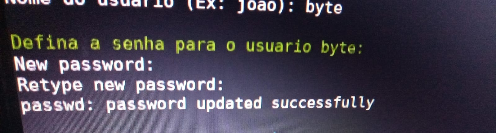
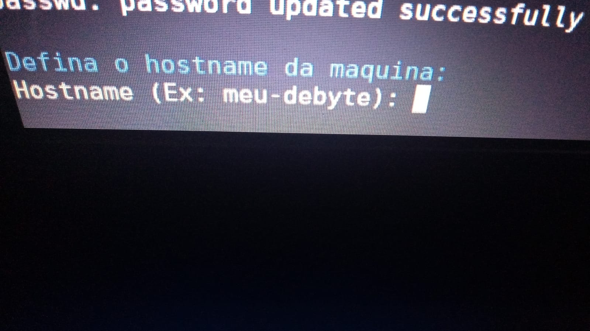
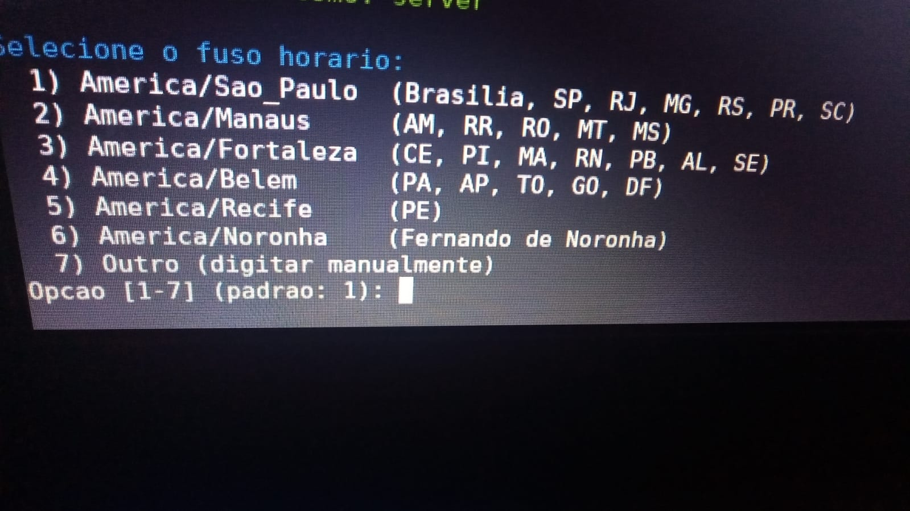

Instalação:
Verificações:
Comandos para verificação da ISO:
gpg --import publickey.asc #
gpg --verify SHA256SUMS.asc SHA256SUMS
sha256sum -c SHA256SUMS
A assinatura GPG confirma que o arquivo SHA256SUMS foi públicada por Ex3cutor76. O SHA256 confirma que a iso que a ISO foi baixada
e corresponde exatamente ao arquivo publicado.
Fingerprinting da assinatura: 7BA24BACBBCD83CED2A1FF0965D0BF47C805AB11
Compare esta Fingerprinting com a que aparece no GPG, para confirmar a identidade./h3>
Live system:
Na primeira vez de instalação do DeByte, a iso te leva até o modo live system, que é o modo
onde você faz testes com o sistema sem precisar instalar o DeByte no seu HD, o modo live system
foi feito apenas para testes, afinal, o DeByte em si é complexo para alguns que chegaram agora
no Linux e que provavelmente não conhecem o Linux tão profundamente.
Tutorial passo-a-passo da instalação:
Parte I: Pen drive bootável
Para fazer o pen drive bootável do DeByte faça de acordo com o seu sistema operacional:
O pen drive pode ter no mínimo 2GB ou mais.
Caso seja Windows:
Instale o rufus: https://rufus.ie/pt_BR/ e coloque a seguinte
configuração:
Boot selection: debytex64-amd64.hybrid.iso
Partition: MBR
Target System: BIOS or UEFI
File System: FAT32 (Ou se quiser pode colocar EXT4)
Caso seja Linux:
lsblk --> Verifique primeiro qual seu pen drive
sudo dd if=debytex64-amd64.hybrid.iso of=/dev/sdX bs=4M status=progress && sync
(Substitua "sdX" por "sdb" ou "sdc" dependendo de onde está seu pendrive)
Aviso: As imagens a seguir foram tiradas em testes em uma máquina real.
Parte II: Boas vindas

Nesta primeira parte você pode ver a logo YOU que é a logo principal do DeByte, junto a ela embaixo
existem alguns comandos que são esses:
tor --> Com este comando você inicia o tor browser que está localizado em /opt/tor-browser/start-tor-browser.desktop
nmcli ou nmtui --> Conectar-se na internet
sudo debyte-install --> Iniciar instalador do DeByte
A partir daqui você não possui muitos detalhes e bem a diferença entre o "nmtui" e o "nmcli dev wifi" é que um é manualmente
e o outro é com interface gráfica, abaixo um exemplo de como se conectar-se manualmente:
nmcli dev wifi --> Liste as redes wifi disponíveis
nmcli dev wifi connect "SSID" password "Senha" --> Conectar-se na rede wifi
Mas caso queira conectar-se em nmtui:
nmtui --> Inicia comando
Activate connection --> Ativar conexão
Selecione a rede que quer e clique em enter.
Coloque a senha da rede para conectar-se
E bem para iniciar a instalação do DeByte é só usar o comando:
sudo debyte-install
Parte III: Instalação
Aviso: Essa parte do instalador envolvendo os discos vai formatar seu computador, caso tenha
arquivos importantes ou até mesmo algo que queira guardar, é recomendado armazenar na nuvem ou
em um pen drive de sobra ou em outro dispositivo antes de fazer a instalação do sistema.

Nesta parte o instalador pergunta em qual disco você gostaria de fazer a instalação
normalmente seria assim o significado de cada um:
sda --> Seu HD ou também SSD (Dependendo de qual é seu armazenamento, em algumas máquinas pode ser nvme0n1)
sdb --> Seu pen drive (Ou qualquer armazenamento externo que não esteja dentro do computador)
sdc --> Normalmente também é o pen drive (Mas na maioria dos casos o pen drive é sdb)
E um aviso, não selecione o sdb, afinal, caso você selecione o sdb ele acaba reescrevendo o
sistema inteiro no seu pen drive e isso pode causar alguns problemas na iso e bem normalmente
quando você seleciona, o instalador pergunta se você tem certeza da escolha.

Depois de instalado no HD ou SSD, o instalador irá perguntar seu nome de usuário. Recomendável escrever em letras minúsculas.

Depois de colocar o nome de usuário que nesse caso foi como "byte" é hora de colocar a senha de usuário,
você pode colocar qualquer tipo de senha, mas um aviso é que ele não irá mostrar na tela por questões de segurança
e ele irá pedir para você confirmar a senha.

Depois de colocar o nome de usuário e senha, agora é preciso colocar o hostname, que seria o nome do computador, você
pode colocar qualquer nome.

Agora é a hora de configurar o relógio, o DeByte por enquanto só lista horários que pertencem ao Brasil, entretanto,
talvez em próximas atualizações possa mudar isso.
Esta parte á praticamente opcional, no Linux o Root seria como se fosse o "administrador", entretanto, ele é opcional e que
se você escolhe não, a senha de administrador continua sendo a mesma que a do usuário, mas, caso você queira senha root, saiba que
agora você tem 2 senhas para guardar, afinal se caso você coloque root, ele será uma senha diferente da do usuário.
E depois disso tudo o instalador vai pedir permissão para reiniciar o sistema, que bem se caso você selecionar que "sim", ele irá reiniciar
o computador, caso selecione "não" ele continua no live system, até você desligar o computador.